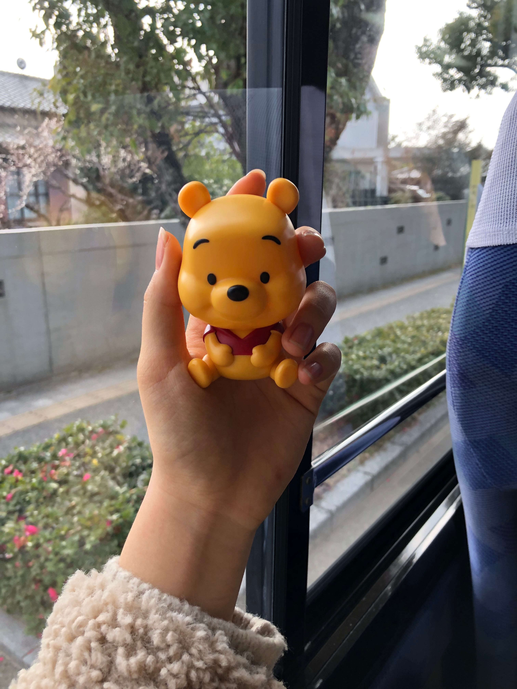
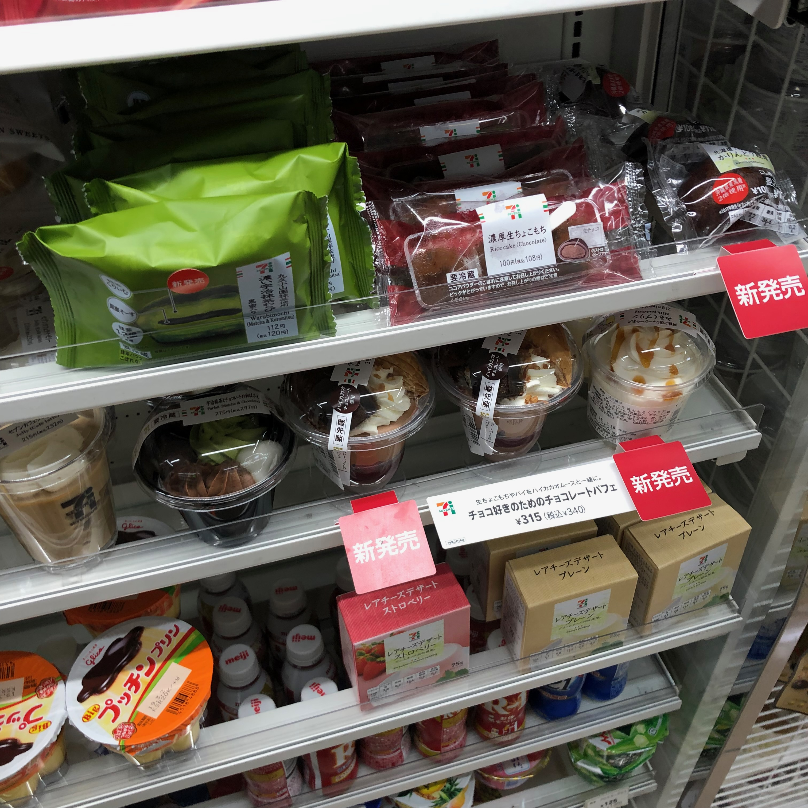

2
-
 하늘도 맑고 바람도 좋아 궁 산책하기 딱이던 날
하늘도 맑고 바람도 좋아 궁 산책하기 딱이던 날
- 다자이후역으로 다시 내려오는 길 귀여운 버거집
- 맛집인지 손님도 많다
- 예쁜 코카시안(?) 쌍둥이도 보고
- 가챠로 뽑은 식빵키링과 돈코츠맨
-  푸까지 다함께 다자이후 안녕!
-
 하카타 돌아오자마자 세븐, 치즈케이크 퀄리티 미쳤다
하카타 돌아오자마자 세븐, 치즈케이크 퀄리티 미쳤다
-  2월이라 초코+딸기 신상 그득
- 신상 놓칠 수 없어요. 무찌뿌요는 더더욱 ^-*

- 숙소에서 조금 쉬다 버스타고 '마리노아 시티'행
-
📍 Marinoa City fukuoka
- 목적은 이 스카이휠
- 엄마, 언니, 나. 입장료는 오히토리사마. 성인 한 명에 500엔
- 근데 셋 다 너무 무서워서 야경은 눈가리고 봤다(?)
-
 쫄깃해진 심장, 타코로 달래주고
쫄깃해진 심장, 타코로 달래주고
- 정류장에서 만난 시원해~ 따뜻해~ 반반자판기
- 코카콜라 피치
- 숙소 가는 길에 장보러 마트에 왔다
- 프레츠는 파격할인중
- 키쥬구미도. 포도류가 젤 맛있다 키쥬구미는

- 여기 마트 알바생 초-이케맨닸다노니..
- 다음날 아침. 카스피해 요거트로 허기 달래고

- 편의점갈 때마다 눈에 밟히니 살 수 밖에 없다! 맛은 평범
- 오늘은 온천가는 날.
- 텐진에서 셔틀버스를 타고
-
📍 Nakagawaseiryu
나카가와세이류 온천 도착.
- 최고였던 대나무 숲 노천탕. 뜨뜻허이 온천하고 마무리 규뉴까지
-
 셔틀버스로 텐진까지 데려다주니 재방문할 맘이 생겨버려
셔틀버스로 텐진까지 데려다주니 재방문할 맘이 생겨버려
-
📍 Yoshizuka unagiya
장어덮밥 먹으러 후쿠오카 맛집 1위의 요시즈카에 왔다. 웨이팅은 필수
- 식사의 시작부터 끝까지 기분좋았던 우나기야. 맛도 물론, 왜 일본에 우나기동소스만 비빈 밥도 파는지 알겠다..